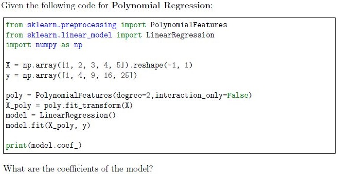
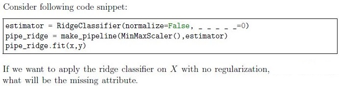
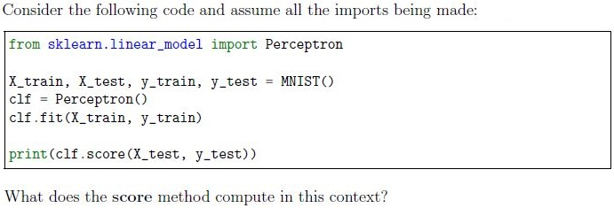
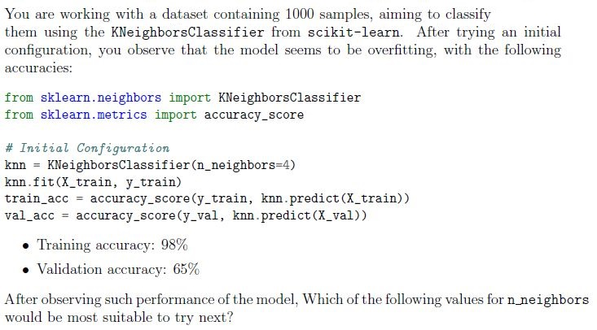
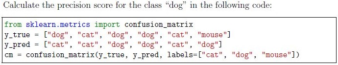
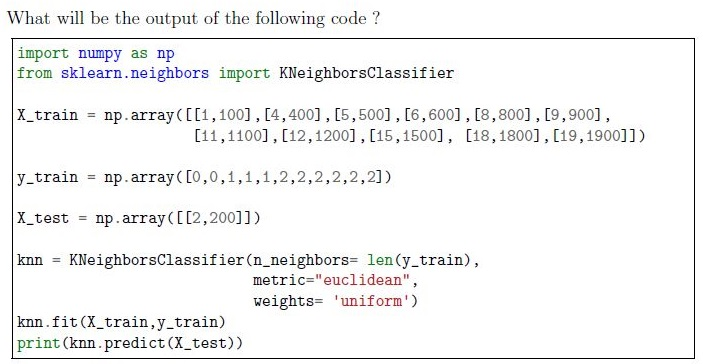
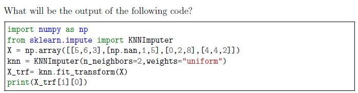
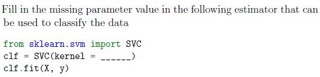

Home / Past papers / MLP Quiz 2 / this paper
2024 Aug04: IIT M AN EXAM QDD2 - 04 Aug 2024
Elapsed 00:00

- [0, 1, 1]
- [0, 2, 1]
- [0, 0, 1]
- [0, 0, 2]
What is ‘naive’ assumption in classifiers based on Naive Bayes?
- All the classes are conditionally independent of each other.
- All the classes are conditionally dependent on each other.
- All the features are conditionally dependent on each other.
- All the features are conditionally independent of each other.

- cv
- reg_rate
- alpha
- tol
- lambda
- None of these
What is the effect of increasing the regularization parameter alpha in Ridge Regression?
- It increases the complexity of the model.
- It reduces the complexity of the model.
- It has no effect on the model.
- It increases the model’s sensitivity to the training data.

- The importance of each feature in predicting the target.
- The residuals of the model.
- The intercept of the regression line.
- It represents the values of hyperparameters of the model.
How can we use both Ridge and Lasso Regularization in a machine learning model?
- By setting penalty parameter to l2
- By setting penalty parameter to l1
- By setting penalty parameter to elasticnet
- By setting penalty parameter to l3
Which of the following types of classification problems is being solved when a model predicts multiple labels(greater than 2) for each instance?
- Binary class, single label classification.
- Multi class, multi label classification.
- Binary class, multi label classification.
- Multi class, single label classification.

- The training data is split into 5 different datasets, each used to train a separatemodel.
- The model is trained and evaluated using 5-fold cross-validation forhyperparameter tuning
- Five different models are trained on 5 resampled datasets of training data.
- The dataset is divided into 5 parts and trained in a single pass without cross-validation.

- The number of correctly classified samples.
- The accuracy of the classifier.
- The loss function value.
- The number of misclassified samples.

- Trains a single Logistic Regression model for all labels.
- Combines Logistic Regression with another model.
- Trains a separate Logistic Regression model for each label.
- Applies Logistic Regression in a one-vs-rest strategy for multi-classclassification.
What is the main advantage of using RandomizedSearchCV over GridSearchCV ?
- RandomizedSearchCV is always faster.
- RandomizedSearchCV evaluates all possible combinations ofhyperparameters.
- RandomizedSearchCV can sample a larger hyperparameter space with feweriterations.
- RandomizedSearchCV always finds the best model.

- LogisticRegression
- Perceptron
- RidgeClassifier
- Support Vector Machine (SVM)
What type of classification problem is the Perceptron algorithm best suited for?
- Linearly separable binary classification problems.
- Non-linear classification problems.
- Regression problems.
- Unsupervised Learning Problems

- [0, 1, 2]
- [0, 1]
- ['setosa', 'versicolor', 'virginica']
- ['setosa', 'versicolor’']
- None of these
What is the default loss value in SGDClassifier API and it gives which classifier?
- ‘log loss’, LogisticRegressor
- ‘log loss’, LogisticClassifier
- ‘hinge’, SVM
- ‘hinge’, Perceptron

- 1
- 2
- 10
- 500




- ‘poly’,
- ‘lasso’
- ‘rbf’,
- ‘scale’
Which of the following scikit-learn model supports incremental learning through partial_fit method ?
- SGDClassifier
- LinearRegression
- Perceptron
- SVC
Which of the following options are true for regularization parameter C in sklearn.svm.SVC ?
- Large value of the regularization parameter C will overfit the training set andcomplex decision boundaries will form.
- Large value of the regularization parameter C will underfit the training set andsmooth decision boundaries will form.
- Small value of the regularization parameter C will overfit the training set andcomplex decision boundaries will form.
- Small value of the regularization parameter C will underfit the training set andsmooth decision boundaries will form.
- None of these
Answer key
- Q1 (MCQ, 3 marks): C
- Q2 (MCQ, 3 marks): D
- Q3 (MCQ, 3 marks): C
- Q4 (MCQ, 2 marks): B
- Q5 (MCQ, 2 marks): A
- Q6 (MCQ, 2 marks): C
- Q7 (MCQ, 2 marks): B
- Q8 (MCQ, 2 marks): B
- Q9 (MCQ, 2 marks): B
- Q10 (MCQ, 2 marks): C
- Q11 (MCQ, 2 marks): C
- Q12 (MCQ, 2 marks): C
- Q13 (MCQ, 2 marks): A
- Q14 (MCQ, 2 marks): A
- Q15 (MCQ, 2 marks): C
- Q16 (MCQ, 2 marks): C
- Q17 (SA, 3 marks): 0.67
- Q18 (SA, 3 marks): 2
- Q19 (SA, 2 marks): 2
- Q20 (MSQ, 2 marks): A, C
- Q21 (MSQ, 2 marks): A, C
- Q22 (MSQ, 3 marks): A, D